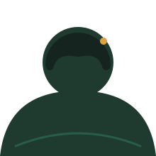

tentang saya
Belajar, mencoba, dan terus mengembangkan kemampuan
Dinda Alisya Izhar merupakan mahasiswa Teknik Komputer semester 3 yang memiliki ketertarikan pada bidang pemrograman dan pengembangan website.
Saat ini sedang mempelajari dasar-dasar HTML, CSS, JavaScript, serta konsep desain antarmuka agar dapat membuat website yang menarik dan mudah digunakan.
- Fokus Web Development
- Status Mahasiswa Semester 3
- Tools VS Code, Figma, Git
- Sedang dipelajari HTML, CSS, JavaScript